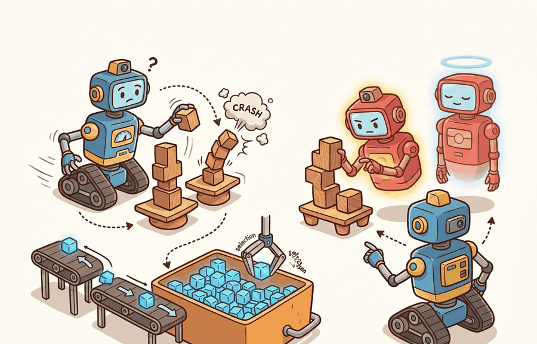

"The world is an exam where the answer key changes after every action."

Figure 16.2A: Section 16.2: Replay buffers and target networks is easier to reason about when the figure shows the concept, evidence path, and action consequence in one physical situation.
A Careful Control Loop
Big Picture
Replay buffers and target networks is one lens on value-based and off-policy methods. We study it because an embodied agent needs decisions that survive contact with noisy sensors, delayed effects, and changing environments.
This section develops the technical contract for replay buffers and target networks into a usable mental model. First we define the object of study, then we connect it to the agent loop, then we test it with a compact implementation.
The key question is practical: what must the agent know, what can it observe, what action is available, and what evidence shows that the action worked?
Action Is The Test
A representation earns its place when it changes the measurable action interface. In replay buffers and target networks, the reader should keep asking which decision becomes easier, safer, or more reliable.
Theory
We can view the agent at time $t$ as receiving an observation $o_t$, maintaining an internal state estimate $\hat s_t$, choosing an action $a_t$, and observing a consequence $o_{t+1}$. The section topic changes one part of this loop, but the loop itself stays fixed.
The practical design rule is to make the interface explicit. Inputs, outputs, assumptions, timing, and failure modes should be named before a model is trained or a controller is tuned.
Mechanism
The mechanism is a sequence of transformations: observe, encode, estimate, choose, execute, monitor. Each transformation should have a measurable contract, otherwise debugging collapses into guessing.
Worked Example
Consider a simulated tabletop agent. A camera observation locates a block, a state estimator converts pixels into an approximate pose, a policy selects a motion, and a controller executes that motion. If the block slips, the loop must notice and recover rather than declare success too early.
import gymnasium as gym
env = gym.make("CartPole-v1")
obs, info = env.reset(seed=7)
for step in range(5):
action = env.action_space.sample()
obs, reward, terminated, truncated, info = env.step(action)
print(step, action, reward, terminated or truncated)
Code Fragment 16.2.1 shows the minimal executable diagnostic for this section's method.
Expected output: the printed trace for Replay buffers and target networks should expose the method configuration, the measured evidence field, and the failure label. If one of those fields is missing or unchanged under the perturbation, the example is not yet an evaluation artifact.
Library Shortcut
The from-scratch fragment is for understanding. In a practical system, use Gymnasium, CleanRL, Stable-Baselines3, Tianshou, SKRL, RSL-RL, and rl_games to handle environment interfaces, batching, physics, data formats, logging, and model loading. The shortcut removes boilerplate so the engineering attention goes to task design, evaluation, and failure recovery.
Practical Recipe
Write the observation, action, and success metric before choosing a model.
Build a baseline that is simple enough to debug by inspection.
Add the library implementation only after the baseline behavior is understood.
Record failures as structured cases: perception error, state error, planning error, control error, or evaluation error.
Run at least one perturbation test before trusting the result.
Common Failure Mode
The common mistake is to evaluate a component in isolation and then assume the closed loop will inherit that score. Embodied systems often fail at the interfaces between components.
Practical Example
A robotics team using replay buffers and target networks should log not only final success, but intermediate observations, chosen actions, controller status, and recovery events. The logs reveal whether the method is solving the task or merely passing the easiest episodes.
Research Frontier
Frontier systems increasingly combine learned policies with structured constraints, tool use, large datasets, and simulation-driven evaluation. Claims from vendor releases should be treated as frontier watch items until independent evaluations or reproducible artifacts appear.
Self Check
Can you name the observation, state estimate, action, success metric, and most likely failure mode for replay buffers and target networks? If not, the system boundary is still too vague.
Builder's Deep Dive
The idea in this section becomes useful when it is tied to a closed-loop contract. In this chapter on Value-Based and Off-Policy Methods, the contract names the observation stream, the state estimate, the action representation, the timing budget, and the evaluation artifact. Without that contract, a model can look capable in a notebook while failing the first time a sensor drops a frame or a controller saturates.
The graduate-level habit is to separate three claims. The conceptual claim explains why the method should help. The systems claim explains which interface it changes. The evidence claim records which measurement would convince a skeptical builder. This separation keeps theory, implementation, and evaluation connected without letting any one of them pretend to prove the other two.
Practical Tool Choices For This Section
Tool or Library
Role in the Topic
Builder Advice
Gymnasium
Replay buffers and target networks
Use it when the experiment needs a maintained implementation rather than custom glue.
PettingZoo
Replay buffers and target networks
Use it when the experiment needs a maintained implementation rather than custom glue.
ROS 2
Replay buffers and target networks
Use it when the experiment needs a maintained implementation rather than custom glue.
MuJoCo
Replay buffers and target networks
Use it when the experiment needs a maintained implementation rather than custom glue.
LeRobot
Replay buffers and target networks
Use it when the experiment needs a maintained implementation rather than custom glue.
Implementation Recipe
A robust implementation starts with a tiny, inspectable baseline and only then moves to Gymnasium or PettingZoo. The baseline should log inputs, outputs, units, timestamps, and termination conditions. The library version should produce the same artifact schema, so the comparison is a same-task comparison rather than a story assembled from separate experiments.
Write a one-paragraph task contract with observation, action, success, and failure fields.
Start with the smallest simulator, dataset, or wrapper that exposes the task contract faithfully.
Run one deterministic smoke test and one perturbation test before scaling.
Save a single result artifact containing configuration, seed, metrics, videos or traces, and failure labels.
Compare methods only when one script evaluates them on the same task panel.
# Build one evidence record for Replay buffers and target networks.
# The same schema should be used for the baseline and the library shortcut.
from dataclasses import dataclass, asdict
@dataclass
class EvidenceRecord:
section: str
tool: str
observation: str
action: str
metric: str
perturbation: str
record = EvidenceRecord(
section="16.2",
tool="Gymnasium",
observation="record after the perturbation run: sensor or state input",
action="record after the perturbation run: control or decision output",
metric="record after the perturbation run: construct-matched success metric",
perturbation="record after the perturbation run: delay, noise, domain shift, or contact change",
)
print(asdict(record))
Code Fragment 16.2.2 records the method-specific evidence schema for testing Replay buffers and target networks with Gymnasium while keeping results comparable to PettingZoo and ROS 2.
Teaching Move
Ask readers to fill the evidence record before they touch model code. The exercise exposes vague task definitions early, when they are cheap to repair.
Failure Analysis Pattern
When a method in this section fails, avoid labeling the whole method as weak. First assign the failure to perception, state estimation, planning, control, timing, data coverage, or evaluation. Then rerun one controlled perturbation that isolates the suspected cause. This pattern turns a disappointing rollout into a reusable diagnostic asset.
Evaluation Recipe
For Replay buffers and target networks, compare only construct-matched metrics that are co-computed in one pass on one configuration: same environment panel, same policy checkpoint, same seed set, same perturbation suite, and the same success definition. Save the result as one artifact with traces, summary statistics, videos or state logs, and failure labels so every number in a later table is backed by the same run.
Key Takeaway
Replay buffers and target networks is useful when it makes the perception-action loop more reliable, not when it merely adds a more impressive model name.
Exercise 16.2.1
Design a method-matched experiment that tests this section's idea in simulation. Specify the environment, observations, actions, metric, and one perturbation.
What's Next?
This section turned replay buffers and target networks into a testable embodied-learning contract: define the loop, choose the tool, save one comparable artifact, and diagnose failure by interface. Next, continue with Section 16.3, where the same evaluation habit carries into the next reinforcement-learning decision.
References & Further Reading
Foundational Papers, Tools, and Practice References
This paper is the canonical source for tabular Q-learning. For this section, connect the source to replay buffers and target networks and check the original resource before copying settings into a new experiment.
The DQN paper made replay buffers and target networks central to deep RL practice. For this section, connect the source to replay buffers and target networks and check the original resource before copying settings into a new experiment.
DDPG extends actor-critic ideas to deterministic continuous control. For this section, connect the source to replay buffers and target networks and check the original resource before copying settings into a new experiment.
TD3 introduces clipped double critics, delayed policy updates, and target smoothing. For this section, connect the source to replay buffers and target networks and check the original resource before copying settings into a new experiment.
SAC combines off-policy reuse with entropy regularization for continuous control. For this section, connect the source to replay buffers and target networks and check the original resource before copying settings into a new experiment.
Tianshou provides modular off-policy and on-policy RL components in PyTorch. For this section, connect the source to replay buffers and target networks and check the original resource before copying settings into a new experiment.